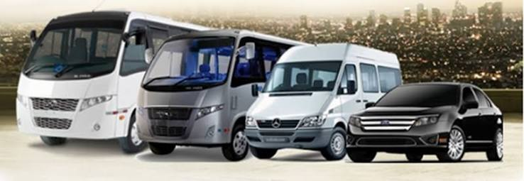

1. Carro Executivo / Sedan (Traslados e City Tours privativos)
Conforto e discrição para suas viagens individuais ou em casal.
Ideal para transfers de aeroporto, reuniões executivas e passeios privativos.
Nosso sedan executivo acomoda confortavelmente até 3 passageiros e possui amplo porta-malas para até 2 malas grandes e 2 de mão.
• Destaques: Ar-condicionado digital, bancos em couro, película de proteção solar, água mineral a bordo e carregadores USB.
• Segurança: Veículo higienizado, com manutenção preventiva em dia, seguro total e regularizado junto aos órgãos de turismo.
2. Minivan / SUV 7 Lugares (Famílias e Pequenos Grupos)
Espaço e versatilidade para viajar com toda a família.
Perfeita para grupos pequenos que não abrem mão de viajar juntos com comodidade. Acomoda até 6 passageiros (com configuração flexível de bancos para ampliar o espaço de bagagem).
• Destaques: Ar-condicionado com saídas traseiras, amplo espaço interno, central multimídia e entradas USB para todos os ocupantes.
• Bagagem: Capacidade para até 4 malas médias (com todos os assentos ocupados).
3. Van Executiva (Excursões, Eventos e Grupos)
A escolha ideal para grupos que buscam segurança e praticidade.
Nossa van executiva oferece o equilíbrio perfeito entre agilidade e conforto para passeios regionais, transfers de grupos e eventos corporativos. Capacidade para até 15 ou 18 passageiros.
• Destaques: Bancos individuais reclináveis em tecido ou couro, ar-condicionado central de alta potência, TV/DVD, som ambiente, Wi-Fi e tomadas/USB.
• Bagagem: Bagageiro traseiro dedicado ou maleiro interno para bagagens de mão.
• Regularização: Frota 100% legalizada (Cadastur / ANTT / Órgãos Estaduais) com motoristas treinados em direção defensiva e receptivo turístico.